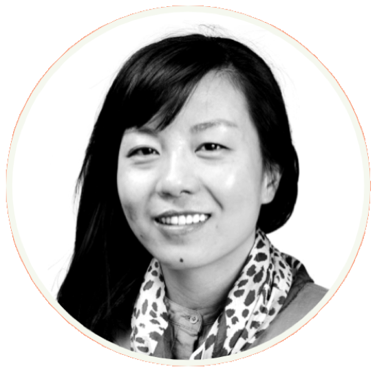
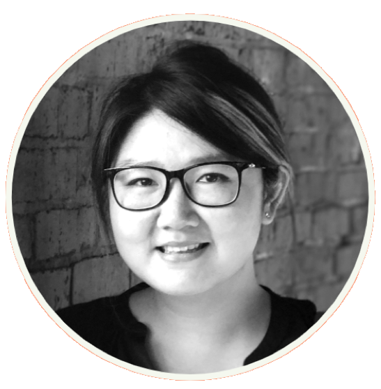

Toggle navigation
Thrively
PEOPLE
CONTACT
WHO WE ARE
WE ENVISION THE WORLD WHERE HEALTH IS ACCESSIBLE TO ALL
AND IS NOT A BURDEN FOR THOSE WHO ARE
LIVING AT OR BELOW THE POVERTY THRESHOLD.
Our Team

Shiyi Zan
Co-founder

Gaew Lertsuridej
Co-founder